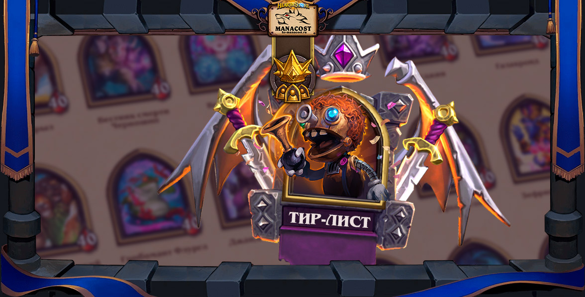

Все свежие новости, обновления режима BattleGrounds у нас на сайте!
Официальный сайт Heartstone
(Обновлено 24 апреля) Тир-лист: лучшие и худшие герои Полей сражений в апреле
Из этого материала вы узнаете о лучших и худших героях Полей сражений в апреле 2022 года. Все они распределены по тирам: от сильнейших (тир-1)...
dfdfd